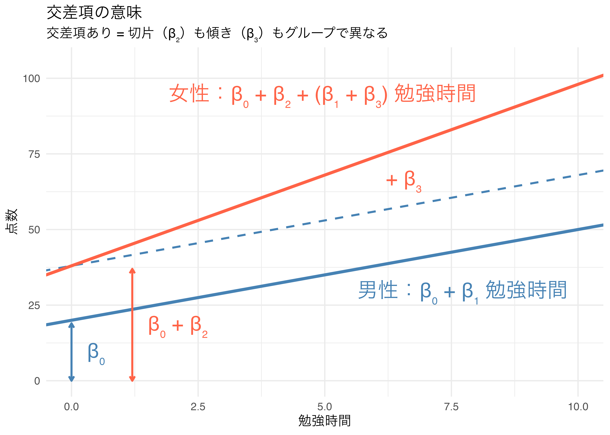
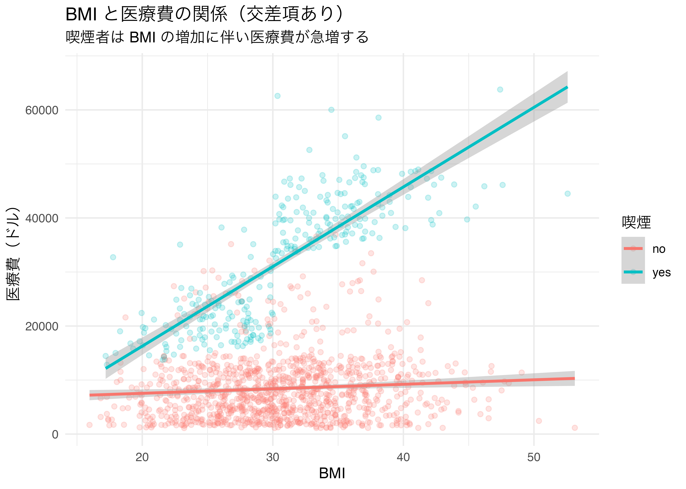
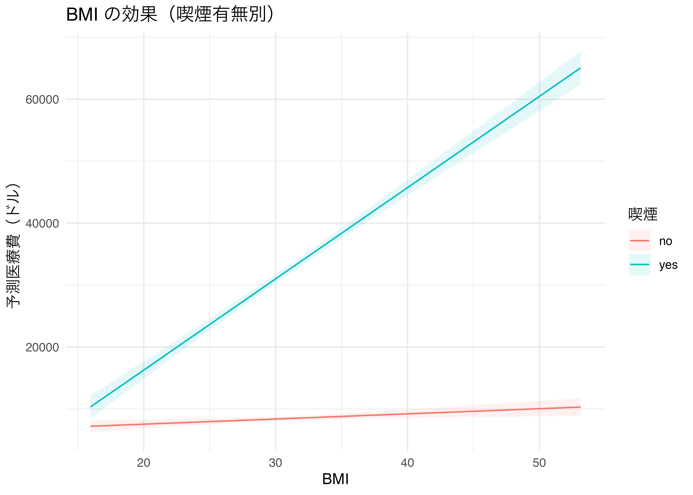
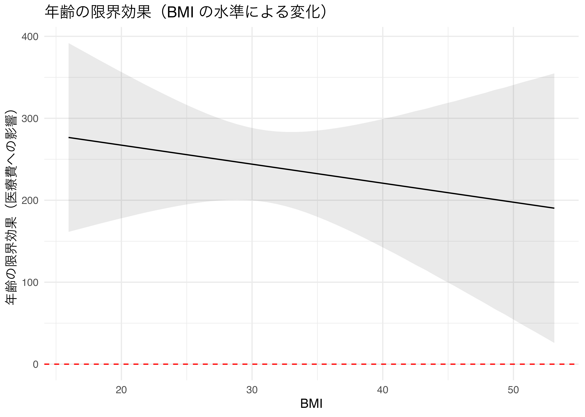
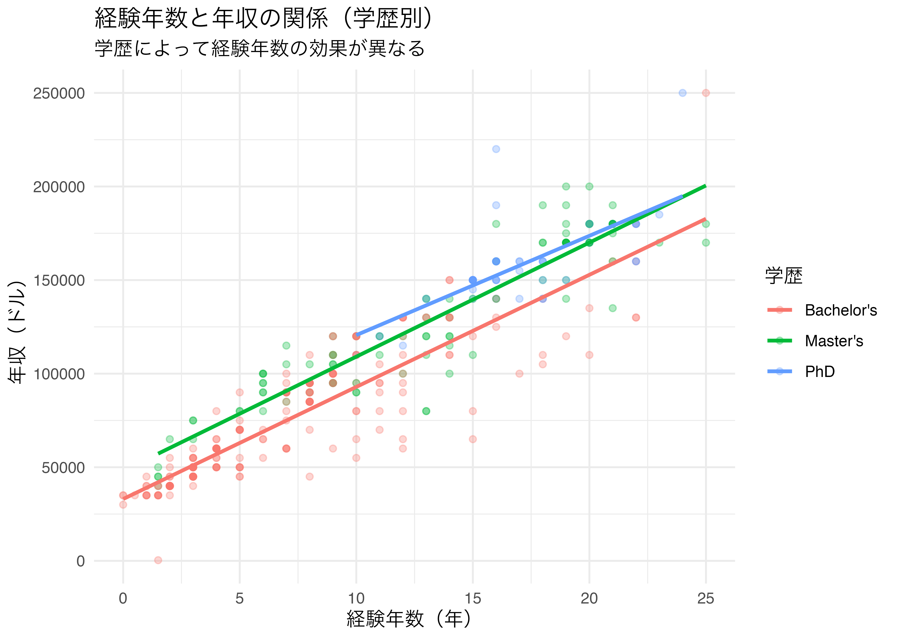

12 回帰分析3
交差項を用いた回帰分析
今日の目標
- 交差項（interaction term）の概念を理解する。
- 「連続変数 × ダミー変数」の交差項を実行・解釈できるようになる。
- 「連続変数 × 連続変数」の交差項を実行・解釈できるようになる。
- 交差項の効果をグラフで視覚的に確認できるようになる。
12.1 パッケージの準備
marginaleffects パッケージとは
交差項を含むモデルの限界効果（marginal effects）を計算・可視化するパッケージです。 交差項があると係数の解釈が複雑になるため、このパッケージを使うと効果をわかりやすく確認できます。
主な関数：
| 関数 | 役割 |
|---|---|
avg_slopes() |
平均限界効果を計算 |
plot_predictions() |
予測値のグラフを描く |
plot_slopes() |
条件付き限界効果のグラフを描く |
12.2 データの準備
12.3 交差項とは
直感的な理解
交差項（interaction term）とは、2 つの変数の積を新しい説明変数として加えることで、 「X₁ の効果が X₂ の値によって変わる」という相互作用を捉えるものです。
具体例：
「BMI が高いほど医療費が増える」—— これは全員に同じように当てはまるか？ 喫煙者では BMI の影響がより大きいかもしれない。
このような「変数の効果が別の変数の水準によって異なる」ことを 交互作用効果（interaction effect）といいます。
ダミー変数と連続変数の交差項が意味すること
交差項を加えると、グループごとに切片も傾きも異なる回帰直線を表します。
モデル式：
\[\text{点数}_i = \beta_0 + \beta_1 \text{勉強時間}_i + \beta_2 \text{女性ダミー}_i + \textcolor{tomato}{\beta_3 \text{勉強時間}_i \times \text{女性ダミー}_i} + \varepsilon_i\]
女性ダミー = 1 の場合（女性の場合）
\[\text{点数}_i = \beta_0 + \beta_1 \text{勉強時間}_i + \beta_2 \times \textcolor{tomato}{1} + \beta_3 \text{勉強時間}_i \times \textcolor{tomato}{1} + \varepsilon_i\]
\[= \textcolor{tomato}{(\beta_0 + \beta_2)} + \textcolor{tomato}{(\beta_1 + \beta_3)} \text{勉強時間}_i + \varepsilon_i\]
女性ダミー = 0 の場合（男性の場合）
\[\text{点数}_i = \beta_0 + \beta_1 \text{勉強時間}_i + \beta_2 \times \textcolor{steelblue}{0} + \beta_3 \text{勉強時間}_i \times \textcolor{steelblue}{0} + \varepsilon_i\]
\[= \textcolor{steelblue}{\beta_0} + \textcolor{steelblue}{\beta_1} \text{勉強時間}_i + \varepsilon_i\]
つまり、男性の切片は \(\beta_0\)、傾きは \(\beta_1\) であり、 女性の切片は \(\beta_0 + \beta_2\)、傾きは \(\beta_1 + \beta_3\) となる。 男性と女性で傾き（勉強時間の影響）が異なり、女性の方が \(\beta_3\) だけ勉強時間の影響が大きい（または小さい）。

ダミー変数なしモデルとの比較
| モデル | 回帰直線 | ダミー変数の効果 |
|---|---|---|
| ダミー変数のみ | 切片が異なる平行な直線 | グループ間の「差」（傾きは同じ） |
| ダミー変数 + 交差項 | 切片も傾きも異なる直線 | グループ間で「差」も「傾き」も異なる |
12.4 連続変数 × ダミー変数の交差項
R での書き方
R では * または : を使って交差項を指定します。
- 1
-
bmi * smokerはbmi + smoker + bmi:smokerと同義 - 2
-
bmi:smokerが交差項（積）の項
Call:
lm(formula = charges ~ bmi * smoker, data = df_ins)
Residuals:
Min 1Q Median 3Q Max
-19768.0 -4400.7 -869.5 2957.7 31055.9
Coefficients:
Estimate Std. Error t value Pr(>|t|)
(Intercept) 5879.42 976.87 6.019 2.27e-09 ***
bmi 83.35 31.27 2.666 0.00778 **
smokeryes -19066.00 2092.03 -9.114 < 2e-16 ***
bmi:smokeryes 1389.76 66.78 20.810 < 2e-16 ***
---
Signif. codes: 0 '***' 0.001 '**' 0.01 '*' 0.05 '.' 0.1 ' ' 1
Residual standard error: 6161 on 1334 degrees of freedom
Multiple R-squared: 0.7418, Adjusted R-squared: 0.7412
F-statistic: 1277 on 3 and 1334 DF, p-value: < 2.2e-16交差項の係数の解釈
# A tibble: 4 × 5
term estimate std.error statistic p.value
<chr> <dbl> <dbl> <dbl> <dbl>
1 (Intercept) 5879. 977. 6.02 2.27e- 9
2 bmi 83.4 31.3 2.67 7.78e- 3
3 smokeryes -19066. 2092. -9.11 2.84e-19
4 bmi:smokeryes 1390. 66.8 20.8 1.61e-83モデル：charges = β₀ + β₁ × bmi + β₂ × smoker + β₃ × (bmi × smoker)
| 係数 | 意味 |
|---|---|
| \(\beta_0\)（切片） | 非喫煙者（smoker = 0）かつ BMI = 0 のときの予測医療費 |
| \(\beta_1\)（bmi） | 非喫煙者において BMI が 1 増えると医療費はどれだけ増えるか |
| \(\beta_2\)（smokeryes） | BMI = 0 のとき、喫煙者は非喫煙者より医療費がいくら高いか |
| \(\beta_3\)（bmi:smokeryes） | 喫煙者では BMI の効果が非喫煙者と比べてどれだけ大きいか |
交差項の係数解釈の注意点
交差項がある場合、各変数の主効果（\(\beta_1\), \(\beta_2\)）の解釈が変わります。
- 非喫煙者（smoker = 0）における BMI の効果：\(\beta_1\)
- 喫煙者（smoker = 1）における BMI の効果：\(\beta_1 + \beta_3\)
β₃ が有意であれば、喫煙者と非喫煙者で BMI の効果が統計的に異なることを意味します。
交差項の視覚化（グループ別の回帰直線）
- 1
-
aes(color = smoker)があればgeom_smooth()はグループ別に別々の直線を描く
`geom_smooth()` using formula = 'y ~ x'
plot_predictions() で予測値を可視化する
- 1
-
conditionで X 軸の変数とグループ変数を指定する

ダミー変数なし・あり・交差項の比較
| ダミーのみ | 交差項あり | |
|---|---|---|
| + p < 0.1, * p < 0.05, ** p < 0.01, *** p < 0.001 | ||
| (Intercept) | -3459.096*** | 5879.424*** |
| (998.279) | (976.869) | |
| bmi | 388.015*** | 83.351** |
| (31.787) | (31.269) | |
| smokeryes | 23593.981*** | -19066.000*** |
| (480.180) | (2092.028) | |
| bmi × smokeryes | 1389.756*** | |
| (66.783) | ||
| Num.Obs. | 1338 | 1338 |
| R2 | 0.658 | 0.742 |
| R2 Adj. | 0.657 | 0.741 |
12.5 連続変数 × 連続変数の交差項
概念の説明
連続変数どうしの交差項は「X₁ の効果が X₂ の水準によって変わる」ことを捉えます。
例： 「年齢が高いほど、BMI の医療費への影響が大きくなる」
# 年齢 × BMI の交差項
model_age_bmi_base <- lm(charges ~ age + bmi, data = df_ins)
model_age_bmi_int <- lm(charges ~ age * bmi, data = df_ins)
modelsummary(
list("交差項なし" = model_age_bmi_base, "交差項あり" = model_age_bmi_int),
stars = TRUE,
gof_map = c("nobs", "r.squared", "adj.r.squared"),
title = "年齢と BMI の交差項（医療費への影響）"
)| 交差項なし | 交差項あり | |
|---|---|---|
| + p < 0.1, * p < 0.05, ** p < 0.01, *** p < 0.001 | ||
| (Intercept) | -6424.805*** | -9162.555* |
| (1744.091) | (4633.918) | |
| age | 241.931*** | 313.657** |
| (22.298) | (114.663) | |
| bmi | 332.965*** | 422.247** |
| (51.374) | (149.134) | |
| age × bmi | -2.321 | |
| (3.640) | ||
| Num.Obs. | 1338 | 1338 |
| R2 | 0.117 | 0.117 |
| R2 Adj. | 0.116 | 0.115 |
plot_slopes() で条件付き限界効果を可視化する
連続×連続の交差項では、「X₁ の効果が X₂ の値によってどう変わるか」を 条件付き限界効果のグラフで確認します。
- 1
-
variablesで効果を見たい変数を指定 - 2
-
conditionで効果が変わる変数を指定

12.6 実践例：給与データの交差項
経験年数 × 学歴の交差項
「経験年数の年収への効果が、学歴によって異なる」かどうかを検証します。
model_s_base <- lm(Salary ~ YearsExperience + EducationLevel,
data = df_sal)
model_s_int <- lm(Salary ~ YearsExperience * EducationLevel,
data = df_sal)
modelsummary(
list("交差項なし" = model_s_base, "交差項あり" = model_s_int),
stars = TRUE,
gof_map = c("nobs", "r.squared", "adj.r.squared"),
title = "給与の回帰分析（経験年数×学歴の交差項）"
)| 交差項なし | 交差項あり | |
|---|---|---|
| + p < 0.1, * p < 0.05, ** p < 0.01, *** p < 0.001 | ||
| (Intercept) | 32981.900*** | 33034.945*** |
| (1541.309) | (1812.848) | |
| YearsExperience | 5996.414*** | 5988.800*** |
| (158.584) | (209.415) | |
| EducationLevelMaster's | 16474.305*** | 15080.311*** |
| (2198.993) | (4236.185) | |
| EducationLevelPhD | 22804.619*** | 34496.027** |
| (2961.442) | (12631.930) | |
| YearsExperience × EducationLevelMaster's | 107.700 | |
| (332.823) | ||
| YearsExperience × EducationLevelPhD | -682.440 | |
| (752.203) | ||
| Num.Obs. | 373 | 373 |
| R2 | 0.890 | 0.890 |
| R2 Adj. | 0.889 | 0.889 |
グラフで確認する
`geom_smooth()` using formula = 'y ~ x'
12.7 交差項を含む全変数モデル
医療費データの完全モデル
# モデルの段階的な構築
m1 <- lm(charges ~ age + bmi + children + smoker + sex + region,
data = df_ins)
# 交差項を追加
m2 <- lm(charges ~ age + bmi * smoker + children + sex + region,
data = df_ins)
# 複数の交差項
m3 <- lm(charges ~ age + bmi * smoker + children + sex + region +
age:smoker,
data = df_ins)
modelsummary(
list("基本モデル" = m1, "bmi×smoker" = m2, "複数交差項" = m3),
stars = TRUE,
gof_map = c("nobs", "r.squared", "adj.r.squared"),
title = "医療費の回帰分析（交差項の段階的追加）"
)| 基本モデル | bmi×smoker | 複数交差項 | |
|---|---|---|---|
| + p < 0.1, * p < 0.05, ** p < 0.01, *** p < 0.001 | |||
| (Intercept) | -11938.539*** | -2223.454* | -2237.992* |
| (987.819) | (865.611) | (878.032) | |
| age | 256.856*** | 263.620*** | 264.101*** |
| (11.899) | (9.516) | (10.664) | |
| bmi | 339.193*** | 23.533 | 23.373 |
| (28.599) | (25.601) | (25.660) | |
| children | 475.501*** | 516.403*** | 516.629*** |
| (137.804) | (110.179) | (110.244) | |
| smokeryes | 23848.535*** | -20415.611*** | -20335.905*** |
| (413.153) | (1648.277) | (1831.134) | |
| sexmale | -131.314 | -500.146+ | -500.043+ |
| (332.945) | (266.518) | (266.619) | |
| regionnorthwest | -352.964 | -585.478 | -585.037 |
| (476.276) | (380.859) | (381.027) | |
| regionsoutheast | -1035.022* | -1210.131** | -1208.863** |
| (478.692) | (382.750) | (383.103) | |
| regionsouthwest | -960.051* | -1231.108** | -1232.060** |
| (477.933) | (382.218) | (382.479) | |
| bmi × smokeryes | 1443.096*** | 1443.484*** | |
| (52.647) | (52.809) | ||
| age × smokeryes | -2.371 | ||
| (23.689) | |||
| Num.Obs. | 1338 | 1338 | 1338 |
| R2 | 0.751 | 0.841 | 0.841 |
| R2 Adj. | 0.749 | 0.840 | 0.840 |
stargazer() で論文形式の表を作成
| Dependent variable: | |||
| 医療費（ドル） | |||
| 基本 | bmi×smoker | 複数交差項 | |
| (1) | (2) | (3) | |
| 年齢 | 256.9*** | 263.6*** | 264.1*** |
| (11.9) | (9.5) | (10.7) | |
| BMI | 339.2*** | 23.5 | 23.4 |
| (28.6) | (25.6) | (25.7) | |
| 子供数 | 475.5*** | 516.4*** | 516.6*** |
| (137.8) | (110.2) | (110.2) | |
| 喫煙（yes） | 23,848.5*** | -20,415.6*** | -20,335.9*** |
| (413.2) | (1,648.3) | (1,831.1) | |
| 性別（male） | -131.3 | -500.1* | -500.0* |
| (332.9) | (266.5) | (266.6) | |
| 地域（northwest） | -353.0 | -585.5 | -585.0 |
| (476.3) | (380.9) | (381.0) | |
| 地域（southeast） | -1,035.0** | -1,210.1*** | -1,208.9*** |
| (478.7) | (382.8) | (383.1) | |
| 地域（southwest） | -960.1** | -1,231.1*** | -1,232.1*** |
| (477.9) | (382.2) | (382.5) | |
| BMI × 喫煙 | 1,443.1*** | 1,443.5*** | |
| (52.6) | (52.8) | ||
| 年齢 × 喫煙 | -2.4 | ||
| (23.7) | |||
| Constant | -11,938.5*** | -2,223.5** | -2,238.0** |
| (987.8) | (865.6) | (878.0) | |
| Observations | 1,338 | 1,338 | 1,338 |
| R2 | 0.8 | 0.8 | 0.8 |
| Adjusted R2 | 0.7 | 0.8 | 0.8 |
| Residual Std. Error | 6,062.1 (df = 1329) | 4,846.4 (df = 1328) | 4,848.2 (df = 1327) |
| F Statistic | 500.8*** (df = 8; 1329) | 780.0*** (df = 9; 1328) | 701.5*** (df = 10; 1327) |
| Note: | p<0.1; p<0.05; p<0.01 | ||
12.8 演習問題
insurance.csv の age × smoker 交差項
年齢（age）と喫煙（smoker）の交差項を含むモデルを推定し、 「年齢の効果が喫煙者と非喫煙者で異なるか」を分析してください。
手順のヒント：
① 以下の2モデルを推定する
モデルA：lm(charges ~ age + smoker, data = df_ins)
モデルB：lm(charges ~ age * smoker, data = df_ins)
② modelsummary() で2モデルを比較する
③ ggplot で喫煙有無別の散布図 + グループ別回帰直線を描く
（aes(color = smoker) + geom_smooth(method = "lm")）
④ モデルBの交差項（age:smokeryes）の係数を解釈する
→ 「喫煙者では年齢が1歳増えるごとに医療費がいくら追加で増えるか」- 結果の表示には
modelsummary()を使ってください
insurance.csv の bmi × smoker の可視化
問題 1 で扱った bmi × smoker の交差項モデルを使って、 marginaleffects::plot_predictions() で予測値を可視化してください。
手順のヒント：
① lm(charges ~ bmi * smoker, data = df_ins) でモデルを推定し係数を確認する
② plot_predictions(model, condition = c("bmi", "smoker")) でグラフを描く
③ 喫煙者と非喫煙者で BMI の傾きがどう違うかコメントするmarginaleffects::plot_predictions()を使ってください
Salary_Data.csv の YearsExperience × Gender 交差項
経験年数（YearsExperience）と性別（Gender）の交差項を含むモデルを推定し、 「経験年数の効果が男女で異なるか」を分析してください。
手順のヒント：
df_sal（drop_na() 済み）を使う
① 以下の3モデルを推定する
モデルA：lm(Salary ~ YearsExperience, data = df_sal)
モデルB：lm(Salary ~ YearsExperience + Gender, data = df_sal)
モデルC：lm(Salary ~ YearsExperience * Gender, data = df_sal)
② modelsummary() で3モデルを比較する
③ ggplot で性別別の散布図 + グループ別回帰直線を描く
④ モデルCの交差項の係数を解釈する
→ 「男性（or 女性）では経験年数の効果がいくら追加で違うか」- 結果の表示には
modelsummary()を使ってください
Student_Performance.csv の連続変数どうしの交差項
学習時間（HoursStudied）と過去スコア（PreviousScores）の 交差項を含むモデルを推定し、plot_slopes() で限界効果を可視化してください。
手順のヒント：
① 以下の2モデルを推定する
モデルA：lm(PerformanceIndex ~ HoursStudied + PreviousScores, data = df_stu)
モデルB：lm(PerformanceIndex ~ HoursStudied * PreviousScores, data = df_stu)
② modelsummary() で2モデルを比較する
③ plot_slopes(モデルB, variables = "HoursStudied", condition = "PreviousScores")
で限界効果を可視化する
④ 過去スコアが高い学生ほど学習時間の効果は大きいか小さいかコメントする- 結果の表示には
modelsummary()とplot_slopes()を使ってください
Housing.csv の交差項（発展）
住宅面積（area）と幹線道路沿い（mainroad）の交差項を含むモデルを推定し、 「面積の価格への効果が立地によって異なるか」を分析してください。
手順のヒント：
① 以下の3モデルを推定する
モデルA：lm(price ~ area, data = df_house)
モデルB：lm(price ~ area + mainroad, data = df_house)
モデルC：lm(price ~ area * mainroad, data = df_house)
② modelsummary() で3モデルを比較する
③ ggplot で mainroad 別の散布図 + グループ別回帰直線を描く
④ plot_predictions() で立地別の予測価格を可視化する
⑤ モデルCの交差項（area:mainroadyes）の係数を解釈する
→ 「幹線道路沿いでは面積が1単位増えるごとに価格がいくら追加で変わるか」- 結果の表示には
modelsummary()とplot_predictions()を使ってください
12.9 まとめ
本日学んだこと
交差項のまとめ
| 種類 | 例 | R の書き方 |
|---|---|---|
| 連続 × ダミー | BMI × 喫煙 | bmi * smoker |
| 連続 × 連続 | 学習時間 × 過去スコア | hours * scores |
| ダミー × ダミー | 性別 × 地域 | gender * region |
交差項の解釈の流れ
# ① 交差項なし vs あり で R² の変化を確認
modelsummary(list(model_base, model_int), stars = TRUE)
# ② 交差項の係数を確認
model_int |> tidy()
# ③ 視覚的に確認（グループ別回帰直線）
ggplot(df, aes(x = X, y = Y, color = D)) +
geom_point(alpha = 0.3) +
geom_smooth(method = "lm")
# ④ marginaleffects で限界効果を確認
plot_predictions(model_int, condition = c("X", "D"))
plot_slopes(model_int, variables = "X1", condition = "X2")使い分けのポイント
- 「2変数の効果が互いに依存しているかもしれない」と思ったら交差項を試す
- ただし、交差項を増やすと解釈が複雑になるため、理論的な根拠を持って追加する
次回の予告（lec13：総合演習）
これまで学んできた内容を総合的に活用した演習を行います。
- 記述統計 → 可視化 → 相関分析 → 回帰分析という一連の流れ
- 複数のデータセットを使った実践的な分析